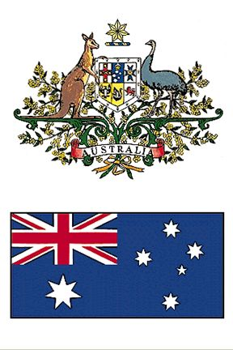
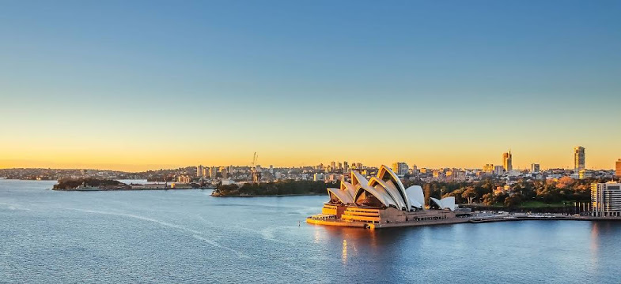
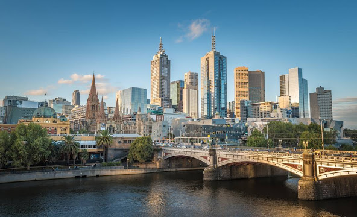
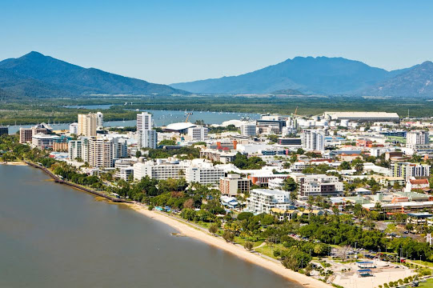

Podstawowe informacje:
Powierzchnia: 7 686 850 km²
Stolica: Canberra
Liczba ludności: 24 511 800
Jednostka monetarna: dolar australijski
Głowa państwa: królowa Elżbieta II
Ustrój polityczny: demokratyczny
Język urzędowy: angielski
Typ państwa: królestwo, monarchia konstytucyjna, federacja

Sydney
Największe miasto Australii i Oceanii z liczbą ludności wynoszącą ponad 5,1 mln mieszkańców, także stolica stanu Nowa Południowa Walia.
Założone w 1788 roku, Sydney jest znaczącym centrum finansowym, handlowym, transportowym, kulturalnym i turystycznym, mając status metropolii o znaczeniu globalnym
Metropolia jest także dużym węzłem komunikacyjnym z największym międzynarodowym lotniskiem w Australii, który obsłużył prawie 42 milionów pasażerów w 2016 roku i rozbudowaną siecią drogową i kolejową..
Położone jest na wschodnim wybrzeżu nad Oceanem Spokojnym.


Melbourne
W latach 1901–1927 stolica Australii, największe miasto stanu Wiktoria oraz drugie pod względem wielkości w Australii (po Sydney), z liczbą ludności wynoszącą 4,8 mln mieszkańców.
Uznane przez czasopismo „The Economist” za „Najlepsze miasto do życia na świecie” w latach 2011–2017.
W Melbourne – obok Sydney – znajduje się największe skupisko polonijne Australii. Siedziba konsula honorowego Polski.
Cairns
Miasto i port w północnej części stanu Queensland w Australii liczące ponad 220 tys. mieszkańców.
Założone w 1876 roku, początkowo jako port mający służyć kopalniom złota i innych metali (tzw. gorączka cynowa w latach 80. XIX wieku) położonym na zachód od miasta,
przekształciło się w ośrodek przemysłu cukrowniczego (w bezpośredniej okolicy liczne plantacje trzciny cukrowej, zbiory dwa razy w roku), a obecnie jest znaczącym ośrodkiem turystycznym.
W Cairns kończy się droga stanowa "Bruce Hwy" oraz linia kolejowa z Brisbane.
